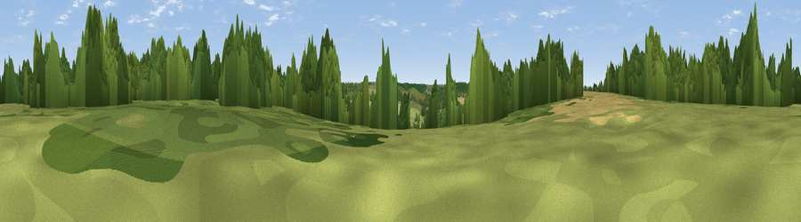

Chartham Downs
#39587 in England · top 75% of its area beats it · near PethamThe view, rendered

A 360° render of this exact spot computed from the terrain model, tree cover and land cover — summer colours, afternoon light, calibrated against photographs of famous viewpoints. Real trees, hedges and buildings will differ in detail.
The panorama
Grey silhouette: terrain skyline in each direction (720 bearings, Earth curvature and refraction included). Dashed green: skyline with trees (+15 m) and buildings (+8 m) as obstacles. Blue strip: how far the ground is visible on each bearing.
Where the view opens
Wedge length = distance to the farthest visible ground on that bearing (vegetation-aware). Rings at 10, 25 and 50 km.
What fills the view
47% woodland · 29% grassland · 23% cropland · 1% built-up
Angular shares of the visible panorama (visual magnitude), not map area. Landscape diversity 0.49 (0–1 Shannon).
Key numbers
More beautiful places nearby
The staircase of upgrades: each row has a higher view potential than everything closer. Driving times are estimates from straight-line distance, calibrated against real road routing — check an actual route before setting out.
| Place | Direction | Drive | Score |
|---|---|---|---|
| Viewpoint near Chartham | WNW · 2 km | ~5 min | 35.2 |
| Viewpoint near Chilham | W · 5 km | ~11 min | 46.8 |
| Viewpoint near Broad Oak | NNE · 7 km | ~15 min | 53.5 |
| Viewpoint near Dunkirk | NW · 8 km | ~17 min | 55.8 |
| The Mount (Popsy's View) | W · 9 km | ~18 min | 61.7 |
| Viewpoint near Wye | SW · 9 km | ~18 min | 70.9 |
| Viewpoint near Brabourne | SSW · 11 km | ~21 min | 71.6 |
| Viewpoint near Brabourne | SSW · 12 km | ~22 min | 71.9 |
51.24169, 1.05455 · source: dobih hill · position refined by local search. Computed location — check access rights before visiting.